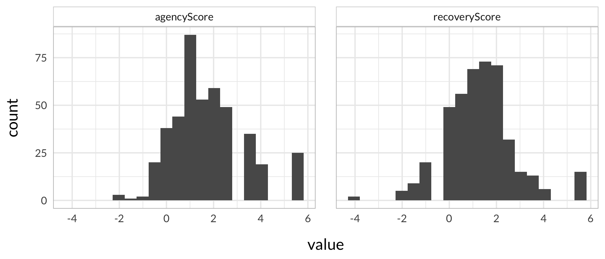
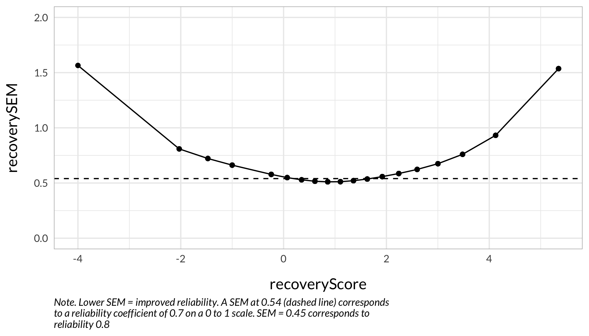
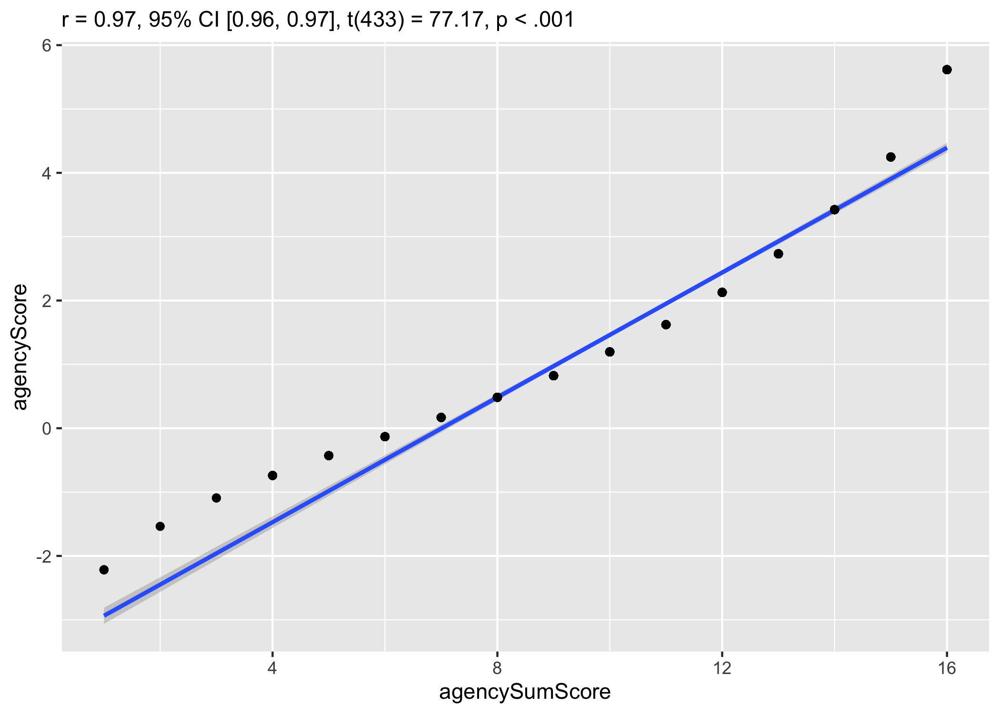

Using Rasch and WLS to account for measurement uncertainties in regression models
![]()
1 Introduction
There are several reasons for putting this blog post together. The larger issue is to investigate ways to analyze relationships between measures that have varying levels of measurement uncertainty across their respective range or continuum. This is relevant to any kind of latent variable measurement that uses multiple indicators/items/questions as a way to assess a latent variable.
In classical test theory (CTT; i.e. factor analysis) the assumption is generally that the measurement error is a single value, constant across the scale and across participants. Modern test theory (Rasch Measurement Theory (RMT) or Item Response Theory (IRT)) has tools to describe the varying uncertainties of the measure itself, and also allows for estimation of measurement uncertainty for each individual, based on the item properties.
In the “business-as-usual” approach, no matter which types of measurement uncertainty are ignored. The simple case of have two variables and an ordinary least squares (OLS) linear regression model will take the input from each variable as a perfect measurement. Bayesians may have another take on this, and I will look into that at a later point, so for now this is relevant for frequentist statistics.
“Business-as-usual” also makes use of ordinal sum scores disguised as interval scores. There is a seemingly wide-spread idea that estimated person interval scores is not significantly different from ordinal sum scores, and we’ll look further into that as well by including ordinal sum scores.
One way to take measurement uncertainty into account in a linear regression model is to use Weighted Least Squares (WLS) instead of OLS. However, this approach only allows weights for one variable. The weights will be based on the measurement uncertainty for the interval scores.
Additionally, we will use Quantile Regression, with and without weights.
2 Data
The data used were collected for a project evaluating multiple work environment questionnaires. Two of the analyzed scales will be used in our example. More information is available at the GitHub repository and website.
The two questionnaires cover the domains of “recovery” and “agency”, where the latter refers to workers’ perceived control over their work situation. Our analyses will look at how “agency” affects “recovery”. We will retain an interval scale score for the “recovery” scale throughout, while varying the “agency” between ordinal sum score, interval score, and interval score with weights.
Variables will be named SEM for standard error of measurement, Score for interval scores, and SumScore for ordinal sum scores.
Code
### some commands exist in multiple packages, here we define preferred ones that are frequently used
select <- dplyr::select
count <- dplyr::count
recode <- car::recode
rename <- dplyr::rename
# read full dataset, remove ppl w missing data
df <- read.spss("data/PreventOSAspss.sav",
to.data.frame = TRUE) %>%
na.omit()
# and item information
itemlabels <- read_excel("data/PreventOSAitemlabels.xlsx")Code
# vector of items
agencyItems <- itemlabels %>%
filter(Dimension == "Möjlighet att påverka") %>%
select(!Dimension)
# data import, with recode of response categories to numerics
agencyData <- df %>%
select(starts_with("q0007")) %>%
mutate(across(everything(), ~ car::recode(.x, "'Aldrig'=0;
'Sällan' =1;
'Ibland'=2;
'Ganska ofta'=3;
'Mycket ofta'=4;
'Alltid'=5",
as.factor = FALSE
)))
names(agencyData) <- agencyItems$itemnr
# adjustments based on psychometric analysis
agencyData$mp4 <- NULL
agencyData$mp1<-recode(agencyData$mp1,"1=0;2=1;3=2;4=3;5=4",as.factor=FALSE)
agencyData$mp3<-recode(agencyData$mp3,"1=0;2=1;3=2;4=3;5=4",as.factor=FALSE)
agencyData$mp2<-recode(agencyData$mp2,"1=0;2=1;3=2;4=3;5=4",as.factor=FALSE)
agencyData$mp5<-recode(agencyData$mp5,"2=1;3=2;4=3;5=4",as.factor=FALSE)Code
# vector of items
recoveryItems <- itemlabels %>%
filter(Dimension == "Återhämtning") %>%
select(!Dimension)
# data import, with recode of response categories to numerics
recoveryData <- df %>%
select(starts_with("q0009")) %>%
mutate(across(everything(), ~ car::recode(.x, "'Aldrig'=0;
'Sällan' =1;
'Ibland'=2;
'Ganska ofta'=3;
'Mycket ofta'=4;
'Alltid'=5",
as.factor = FALSE
)))
names(recoveryData) <- recoveryItems$itemnr
# adjustments based on psychometric analysis
recoveryData$å2 <- NULL3 Measurement properties

Code
RItif(recoveryData)Code
RItif(agencyData, cutoff = 2.5) +
geom_hline(yintercept = 2.5,
color = "#e83c63", linetype = 5, size = 0.5)
4 Estimating person score/locations.
Code
df$agencyScore <- RIestThetas(agencyData, theta_range = agencyRange)
df$agencyScore <- round(df$agencyScore,3)
df$recoveryScore <- RIestThetas(recoveryData, theta_range = recoveryRange)
df$recoveryScore <- round(df$recoveryScore,3)4.1 Plot relationship ordinal/interval
Code
RIscoreSE(recoveryData, sdx = 15, score_range = recoveryRange, output = "figure")
Code
#RIscoreSE(recoveryData, sdx = 15, score_range = recoveryRange)
RIscoreSE(agencyData, sdx = 10, score_range = agencyRange, output = "figure")
Code
#RIscoreSE(agencyData, sdx = 10, score_range = agencyRange, output = "table")4.2 Measurement uncertainties
Code
recoveryTable <- RIscoreSE(recoveryData, sdx = 15, width = 50, score_range = recoveryRange, output = "dataframe")
recoveryTable <- recoveryTable %>%
rename(recoverySEM = `Logit std.error`,
recoveryScore = `Logit score`,
recoverySumScore = `Ordinal sum score`) %>%
mutate(recoveryScore = round(recoveryScore,3))
agencyTable <- RIscoreSE(agencyData, width = 50, sdx = 10, score_range = agencyRange, output = "dataframe")
agencyTable <- agencyTable %>%
rename(agencySEM = `Logit std.error`,
agencyScore = `Logit score`,
agencySumScore = `Ordinal sum score`) %>%
mutate(agencyScore = round(agencyScore,3))Join SEM values to df based on scores
Code
data <- data.frame(
agencyScore = df$agencyScore,
recoveryScore = df$recoveryScore
)
data <- left_join(data,recoveryTable, by = "recoveryScore")
data <- left_join(data,agencyTable, by = "agencyScore")
glimpse(data)Rows: 447
Columns: 6
$ agencyScore <dbl> 2.128, 0.484, 2.128, 3.423, 1.622, 2.732, 0.484, 1.62…
$ recoveryScore <dbl> -0.592, 0.858, 2.598, 1.919, 1.627, 3.002, 1.919, 1.6…
$ recoverySumScore <dbl> NA, 10, 16, 14, 13, 17, 14, 13, 13, 10, 14, 20, 10, 4…
$ recoverySEM <dbl> NA, 0.511, 0.623, 0.558, 0.536, 0.675, 0.558, 0.536, …
$ agencySumScore <dbl> 12, 8, 12, 14, 11, 13, 8, 11, 11, 12, 10, 16, 8, 10, …
$ agencySEM <dbl> 0.737, 0.582, 0.737, 0.885, 0.680, 0.803, 0.582, 0.68…We have some respondents with unexpected responses and thetas outside what we have generic SEM info about. It is possible to estimate individual SEM but this has not yet been implemented in the RISEkbmRasch package and for this exercise it’ll be sufficient to use those with
Code
data <- na.omit(data)5 Visualizing data
5.1 Histograms
Code
data %>%
pivot_longer(cols = c("agencyScore","recoveryScore")) %>%
ggplot(aes(x = value)) +
geom_histogram(bins = 20) +
facet_wrap(~name) +
theme_rise()
Code
data %>%
pivot_longer(cols = c("agencySumScore","recoverySumScore")) %>%
ggplot(aes(x = value)) +
geom_histogram(bins = 20) +
facet_wrap(~name) +
theme_rise()
5.2 SEM
Code
data %>%
ggplot(aes(y = agencySEM,
x = agencyScore)) +
geom_point() +
geom_line(aes(group = 1)) +
geom_hline(yintercept = 0.54, linetype = 2) +
theme_rise() +
coord_cartesian(ylim = c(0,2)) +
labs(caption = str_wrap("Note. Lower SEM = improved reliability. A SEM at 0.54 (dashed line) corresponds to a reliability coefficient of 0.7 on a 0 to 1 scale. SEM = 0.45 corresponds to reliability 0.8"))
Code
data %>%
ggplot(aes(y = recoverySEM,
x = recoveryScore)) +
geom_point() +
geom_line(aes(group = 1)) +
geom_hline(yintercept = 0.54, linetype = 2) +
theme_rise() +
coord_cartesian(ylim = c(0,2)) +
labs(caption = str_wrap("Note. Lower SEM = improved reliability. A SEM at 0.54 (dashed line) corresponds to a reliability coefficient of 0.7 on a 0 to 1 scale. SEM = 0.45 corresponds to reliability 0.8"))
5.3 Scatter plots
Code
ggplot(data,
aes(x = agencyScore,
y = recoveryScore)) +
geom_point() +
geom_smooth(method = "lm") +
theme_rise()Code
ggplot(data,
aes(x = agencySumScore,
y = recoveryScore)) +
geom_point() +
geom_smooth(method = "lm") +
theme_rise()6 Weights for WLS regression
Code
data %>%
mutate(weights = 1/agencySEM) %>%
ggplot(aes(x = agencySEM,
y = weights)) +
geom_point(size = 2) +
theme_rise() +
coord_cartesian(ylim = c(0,2))
Code
weights agencySEM
1 1.7699115 0.565
2 1.7605634 0.568
3 1.7421603 0.574
4 1.7182131 0.582
5 1.6694491 0.599
6 1.6556291 0.604
7 1.5723270 0.636
8 1.5408320 0.649
9 1.4705882 0.680
10 1.3568521 0.737
11 1.3422819 0.745
12 1.2453300 0.803
13 1.1299435 0.885
14 1.0504202 0.952
15 0.9560229 1.046
16 0.6045949 1.6547 Linear regression models
Call:
lm(formula = recoveryScore ~ agencyScore, data = data)
Residuals:
Min 1Q Median 3Q Max
-4.3997 -0.8229 0.0283 0.7144 4.1132
Coefficients:
Estimate Std. Error t value Pr(>|t|)
(Intercept) 0.30254 0.08407 3.599 0.000357 ***
agencyScore 0.57475 0.03545 16.212 < 2e-16 ***
---
Signif. codes: 0 '***' 0.001 '**' 0.01 '*' 0.05 '.' 0.1 ' ' 1
Residual standard error: 1.152 on 433 degrees of freedom
Multiple R-squared: 0.3777, Adjusted R-squared: 0.3763
F-statistic: 262.8 on 1 and 433 DF, p-value: < 2.2e-16Code
bptest(olsInt)
studentized Breusch-Pagan test
data: olsInt
BP = 2.1311, df = 1, p-value = 0.1443Code
dwtest(olsInt)
Durbin-Watson test
data: olsInt
DW = 1.945, p-value = 0.2824
alternative hypothesis: true autocorrelation is greater than 0Code
check_model(olsInt)
Code
Call:
lm(formula = recoveryScore ~ agencyScore, data = data, weights = 1/data$agencySEM)
Weighted Residuals:
Min 1Q Median 3Q Max
-5.8273 -0.8885 0.0199 0.8090 4.9726
Coefficients:
Estimate Std. Error t value Pr(>|t|)
(Intercept) 0.29223 0.08019 3.644 0.000301 ***
agencyScore 0.58893 0.03985 14.778 < 2e-16 ***
---
Signif. codes: 0 '***' 0.001 '**' 0.01 '*' 0.05 '.' 0.1 ' ' 1
Residual standard error: 1.346 on 433 degrees of freedom
Multiple R-squared: 0.3353, Adjusted R-squared: 0.3337
F-statistic: 218.4 on 1 and 433 DF, p-value: < 2.2e-16Code
check_model(wlsInt)
Call:
lm(formula = recoveryScore ~ agencySumScore, data = data)
Residuals:
Min 1Q Median 3Q Max
-4.2632 -0.7899 -0.0307 0.6911 3.9214
Coefficients:
Estimate Std. Error t value Pr(>|t|)
(Intercept) -1.77279 0.19929 -8.895 <2e-16 ***
agencySumScore 0.29085 0.01795 16.205 <2e-16 ***
---
Signif. codes: 0 '***' 0.001 '**' 0.01 '*' 0.05 '.' 0.1 ' ' 1
Residual standard error: 1.152 on 433 degrees of freedom
Multiple R-squared: 0.3775, Adjusted R-squared: 0.3761
F-statistic: 262.6 on 1 and 433 DF, p-value: < 2.2e-16Code
check_model(olsOrd)7.1 Linear model comparison
Code
library(broom)
models <- c("OLSinterval","WLSinterval","OLSordinal")
rbind(tidy(olsInt, conf.int = TRUE),
tidy(wlsInt, conf.int = TRUE),
tidy(olsOrd, conf.int = TRUE)) %>%
add_column(model = rep(models, each = 2), .before = "term") %>%
mutate(across(where(is.numeric), ~ round(.x, 3))) %>%
arrange(term) %>%
kbl_rise()| model | term | estimate | std.error | statistic | p.value | conf.low | conf.high |
|---|---|---|---|---|---|---|---|
| OLSinterval | (Intercept) | 0.303 | 0.084 | 3.599 | 0 | 0.137 | 0.468 |
| WLSinterval | (Intercept) | 0.292 | 0.080 | 3.644 | 0 | 0.135 | 0.450 |
| OLSordinal | (Intercept) | -1.773 | 0.199 | -8.895 | 0 | -2.164 | -1.381 |
| OLSinterval | agencyScore | 0.575 | 0.035 | 16.212 | 0 | 0.505 | 0.644 |
| WLSinterval | agencyScore | 0.589 | 0.040 | 14.778 | 0 | 0.511 | 0.667 |
| OLSordinal | agencySumScore | 0.291 | 0.018 | 16.205 | 0 | 0.256 | 0.326 |
Code
| model | r.squared | adj.r.squared | sigma | statistic | p.value | df | logLik | AIC | BIC | deviance | df.residual | nobs |
|---|---|---|---|---|---|---|---|---|---|---|---|---|
| OLSinterval | 0.378 | 0.376 | 1.152 | 262.822 | 0 | 1 | -677.649 | 1361.298 | 1373.524 | 574.268 | 433 | 435 |
| WLSinterval | 0.335 | 0.334 | 1.346 | 218.385 | 0 | 1 | -676.201 | 1358.403 | 1370.629 | 785.009 | 433 | 435 |
| OLSordinal | 0.378 | 0.376 | 1.152 | 262.611 | 0 | 1 | -677.715 | 1361.430 | 1373.656 | 574.443 | 433 | 435 |
8 Quantile regression
We can use any set of quantiles using the tau option. Here, we choose 0.25, 0.5, and 0.75. Tau = 0.5 is the same as “median regression”.
8.1 Visualization
Code
dviz <- data %>%
add_column(id = seq(1, nrow(data), by = 1)) %>%
pivot_longer(c("agencyScore","recoveryScore")) %>%
group_by(name) %>%
mutate(qgroup = case_when(value < quantile(value, probs = .25) ~ "lower",
value >= quantile(value, probs = .25) & value < quantile(value, probs = .75) ~ "middle",
value >= quantile(value, probs = .75) ~ "upper")) %>%
ungroup() %>%
pivot_wider(id_cols = "id",
names_from = "name",
values_from = c("value","qgroup"))
dviz %>%
ggplot(aes(
x = value_agencyScore,
y = value_recoveryScore,
color = qgroup_recoveryScore
)) +
geom_point() +
theme_rise() +
scale_color_brewer(type = "qual", palette = "Dark2") +
theme(legend.position = "none") +
labs(x = "Agency Score",
y = "Recovery Score")
Code
Call: rq(formula = recoveryScore ~ agencyScore, tau = c(0.25, 0.5,
0.75), data = data)
tau: [1] 0.25
Coefficients:
coefficients lower bd upper bd
(Intercept) -0.33802 -0.58920 0.40647
agencyScore 0.49577 0.39191 0.55148
Call: rq(formula = recoveryScore ~ agencyScore, tau = c(0.25, 0.5,
0.75), data = data)
tau: [1] 0.5
Coefficients:
coefficients lower bd upper bd
(Intercept) 0.51402 0.12824 0.78261
agencyScore 0.49058 0.35574 0.61262
Call: rq(formula = recoveryScore ~ agencyScore, tau = c(0.25, 0.5,
0.75), data = data)
tau: [1] 0.75
Coefficients:
coefficients lower bd upper bd
(Intercept) 0.89002 0.72657 1.21965
agencyScore 0.63439 0.30458 0.81195 Code
Call: rq(formula = recoveryScore ~ agencyScore, tau = c(0.25, 0.5,
0.75), data = data, weights = 1/data$agencySEM)
tau: [1] 0.25
Coefficients:
coefficients lower bd upper bd
(Intercept) -0.32805 -0.64424 -0.14858
agencyScore 0.52102 0.42176 0.61739
Call: rq(formula = recoveryScore ~ agencyScore, tau = c(0.25, 0.5,
0.75), data = data, weights = 1/data$agencySEM)
tau: [1] 0.5
Coefficients:
coefficients lower bd upper bd
(Intercept) 0.49545 0.17147 0.66286
agencyScore 0.50965 0.38088 0.67287
Call: rq(formula = recoveryScore ~ agencyScore, tau = c(0.25, 0.5,
0.75), data = data, weights = 1/data$agencySEM)
tau: [1] 0.75
Coefficients:
coefficients lower bd upper bd
(Intercept) 0.97870 0.58664 1.19842
agencyScore 0.59272 0.40623 0.76771 Code
Call: rq(formula = recoveryScore ~ agencySumScore, tau = c(0.25, 0.5,
0.75), data = data)
tau: [1] 0.25
Coefficients:
coefficients lower bd upper bd
(Intercept) -2.30729 -3.12124 -1.67026
agencySumScore 0.26414 0.19826 0.33636
Call: rq(formula = recoveryScore ~ agencySumScore, tau = c(0.25, 0.5,
0.75), data = data)
tau: [1] 0.5
Coefficients:
coefficients lower bd upper bd
(Intercept) -1.39100 -1.77296 -0.75946
agencySumScore 0.25000 0.18339 0.28561
Call: rq(formula = recoveryScore ~ agencySumScore, tau = c(0.25, 0.5,
0.75), data = data)
tau: [1] 0.75
Coefficients:
coefficients lower bd upper bd
(Intercept) -0.77157 -1.29441 -0.55566
agencySumScore 0.26579 0.22391 0.323348.2 QR parameter plots
Code
plot(parameters(olsIntQ)) +
geom_vline(xintercept = 0.5, linetype = 2) +
geom_vline(xintercept = 0.6, linetype = 2) +
labs(title = "OLS quantile regression with interval predictor",
caption = "Note. Dashed lines indicate 0.5 and 0.6.") +
coord_cartesian(xlim = c(0,0.7))
Code
plot(parameters(wlsIntQ)) +
geom_vline(xintercept = 0.5, linetype = 2) +
geom_vline(xintercept = 0.6, linetype = 2) +
labs(title = "WLS quantile regression with interval predictor",
caption = "Note. Dashed lines indicate 0.5 and 0.6.") + coord_cartesian(xlim = c(0,0.7))Code
plot(parameters(olsOrdQ)) +
geom_vline(xintercept = 0.25, linetype = 2) +
labs(title = "OLS quantile regression with ordinal sum score predictor",
caption = "Note. Dashed line indicates 0.25.") +
coord_cartesian(xlim = c(0,0.4))8.3 Quantile regression scatter plots
I haven’t figured out how to make ggplot use weighted model, so these are only unweighted.
Code
ggplot(data,
aes(x = agencyScore, y = recoveryScore)) +
geom_point() +
geom_quantile(quantiles = c(0.25,0.5,0.75),
method = "rq")Code
ggplot(data,
aes(x = agencySumScore, y = recoveryScore)) +
geom_point() +
geom_quantile(quantiles = c(0.25,0.5,0.75),
method = "rq")
Code
ggplot(data,
aes(x = agencyScore, y = recoveryScore)) +
geom_point() +
geom_quantile(quantiles = c(0.2,0.4,0.6,0.8),
method = "rq")
Code
ggplot(data,
aes(x = agencySumScore, y = recoveryScore)) +
geom_point() +
geom_quantile(quantiles = c(0.2,0.4,0.6,0.8),
method = "rq")Reuse
Citation
@online{johansson2023,
author = {Magnus Johansson},
title = {Using {Rasch} and {WLS} to Account for Measurement
Uncertainties in Regression Models},
date = {2023-09-17},
url = {https://pgmj.github.io/WLSregr.html},
langid = {en}
}